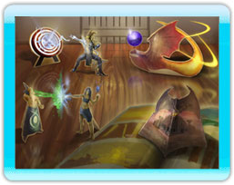

Training
In this mode you can learn the basics of flight, spells and melee attacks.
Story Mode
This is a single player mode where you can select from one of four characters. You can follow your chosen character's story and their reason for fighting. All characters share the same goal – to collect all four Magical ‘Dragon Tomes’, however their reasons for uniting the tomes are very different. Once you defeat a dragon you must then fly throughout the level to collect ten elemental orbs to obtain a Magic Tome. If you collect all the orbs you can then proceed to the next level. While in story mode you can only use the element spells that you have obtained from the corresponding tome.
Combat Mode
This is an arcade style mode where you can play single player or face off against your friends.
Flight Mode
Here you can repeat any of the orb collecting parts of story mode that you have previously done to try and get an extra fast time.